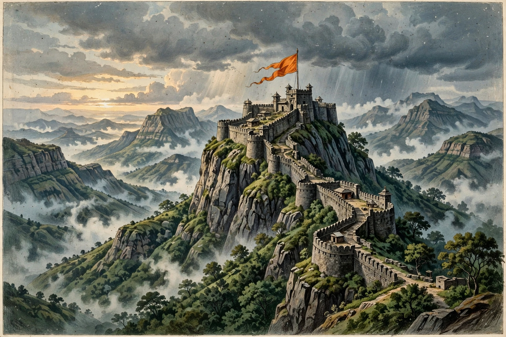

| Maratha Empire (Maratha Confederacy) | |
| Existence | 1674–1818 |
|---|---|
| Founder | Shivaji (crowned Chhatrapati, 1674) |
| Capitals | Raigad; later Satara and Pune (Peshwa's seat) |
| Languages | Marathi, Modi script; Persian in diplomacy |
| Peak extent | About 2.8 million km² (c. 1760) |
The Maratha Empire, later organised as the Maratha Confederacy, was a powerful Indian polity that dominated much of the Indian subcontinent in the 18th century, lasting from 1674 to 1818. It was founded by the warrior-king Shivaji of the Bhonsle clan, who carved a kingdom out of the declining Bijapur Sultanate and defied the Mughal Empire, and it expanded after his death to cover, at its height around 1760, roughly a third of South Asia, stretching from the Indus approaches to Bengal and deep into the Deccan and the south.

Shivaji (1630–1680) built his state in the hill country of the Western Ghats, using mobile cavalry, hill forts and guerrilla tactics against Bijapur and the Mughals; he crowned himself Chhatrapati ("paramount sovereign") at Raigad in 1674. After the Mughal emperor Aurangzeb's long Deccan war and the execution of Shivaji's son Sambhaji (1689), Rajaram and then Tarabai sustained resistance; following Aurangzeb's death in 1707, Shahu emerged as Chhatrapati, and real power passed to his hereditary prime ministers, the Peshwas of Pune, beginning with Balaji Vishwanath (1713). Under Baji Rao I and his successors the Marathas swept north to Delhi and beyond, levying the chauth (quarter revenue) and sardeshmukhi taxes over vast territories.
From the mid-18th century the empire functioned as a confederacy of great Maratha houses ruling semi-autonomous states — the Peshwa at Pune, Scindia at Gwalior, Holkar at Indore, Gaekwad at Baroda and Bhonsle at Nagpur — nominally under the Chhatrapati at Satara. Maratha ambitions in the north were shattered at the Third Battle of Panipat (1761) by Ahmad Shah Durrani, but the empire recovered under Peshwa Madhavrao I and the statesman Mahadji Scindia. Repeated conflict with the British East India Company in the three Anglo-Maratha Wars (1775–1782, 1803–1805, 1817–1819) destroyed the confederacy; in 1818 the last Peshwa, Baji Rao II, surrendered and was pensioned off, and most Maratha territories were annexed to British India, the princely remnants surviving until 1947.
Shivaji's administration featured the ashtapradhan, a council of eight ministers, salaried officials in place of feudal jagirs in the core kingdom, and a formidable navy on the Konkan coast. Maratha rule is remembered in Maharashtra with particular pride, and Shivaji remains one of the most revered figures in Indian history.
Shivaji · Peshwa · Third Battle of Panipat · Anglo-Maratha Wars